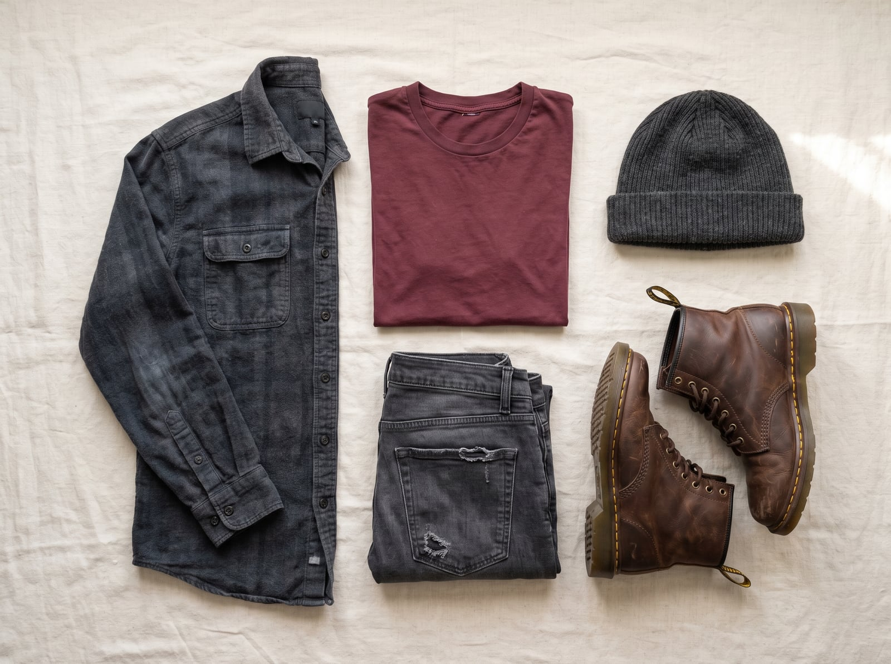
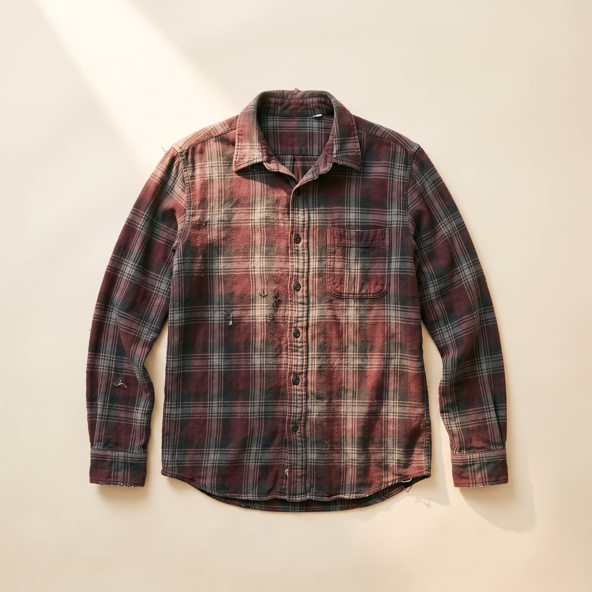
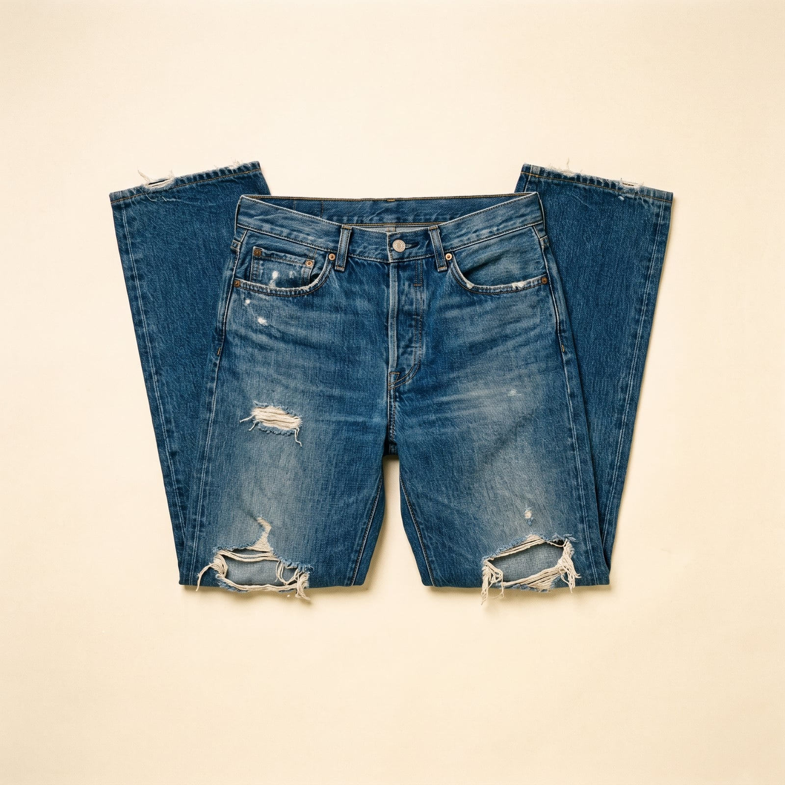
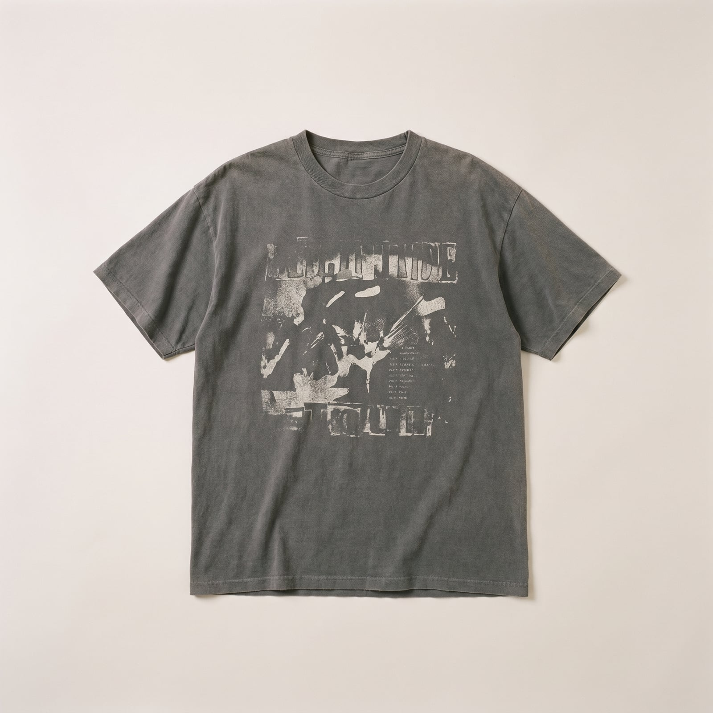
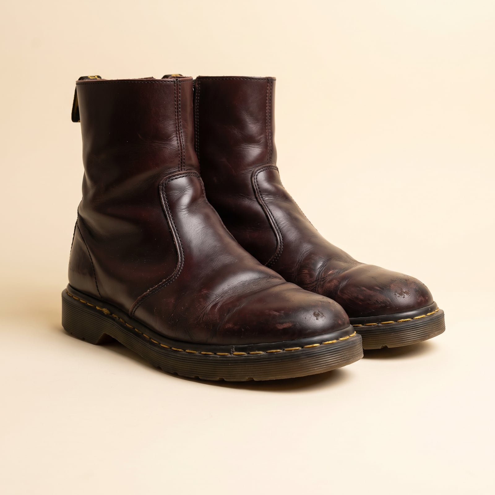
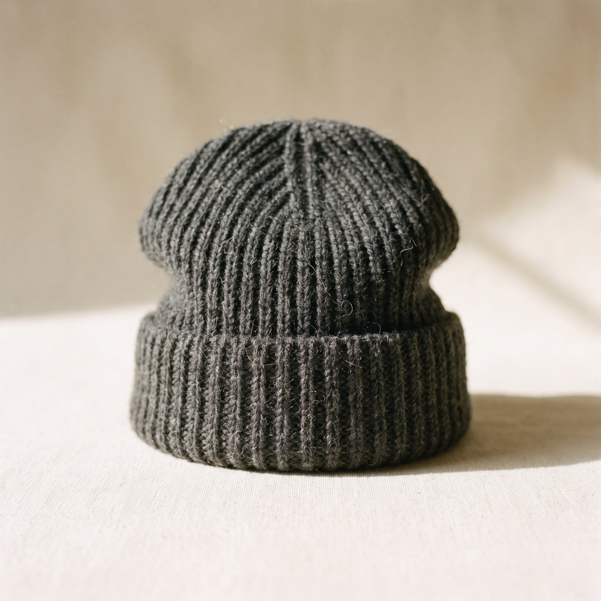

The Undone
Grunge came out of Seattle's overcast, unglamorous music scene in the late 1980s and early '90s, worn by bands like Nirvana and Mudhoney less as a style choice than as an accurate reflection of a cold, thrifted, broke city — flannel because it was cheap and warm, ripped jeans because new ones cost money nobody had, band tees because they were free at the door. When the fashion industry noticed (Marc Jacobs' widely mocked, now-legendary 1992 grunge collection for Perry Ellis), it tried to sell the look back at a markup, mostly missing the point that its entire appeal was that nobody had paid full price for any of it.
The trademark, unusually, is the absence of trying rendered as its own aesthetic: flannel layered with visible indifference, jeans ripped by wear rather than a factory, hair unstyled on purpose, nothing coordinated with anything else. Where most style movements have a vocabulary of correct choices, this one's vocabulary is mostly a list of things not to bother with.
It suits people who find most fashion faintly embarrassing — who'd rather be dressed by accident than caught trying too hard, and who trust that genuine indifference reads as more credible than performed effortlessness ever could. There's an anti-establishment sincerity to it that's aged unusually well, precisely because it never depended on being flattering.
- Flannel shirts, layered with visible indifference to color-matching
- Jeans ripped by actual wear, not a factory pre-distressing them
- Band and thrift-store T-shirts, faded past legibility
- Unstyled hair and a general refusal to look put-together
- Doc Martens or beat-up sneakers, worn well past their prime


The Flannel Shirt
Flannel was cheap, warm, and already in every thrift store in grunge-era Seattle — bands like Nirvana wore it not as a style choice but because it was simply what was around and affordable in a cold, broke city.
The most authentic possible source, and the cheapest.
Shop this →New, but plain and workwear-derived enough to read as unpretentious.
Shop this →Deliberately reworked or distressed flannel from designers who've made a study of looking exactly this unbothered.
Shop this →
The Ripped Jeans
Jeans ripped by actual years of wear — knees blown out from skateboarding or just from being the only pair someone owned — got imitated by the fashion industry decades later, missing the fact that the original tears were never a design choice.
Actual wear, or the cheapest possible new starting point to wear in yourself.
Shop this →A recognizable, unpretentious base with real cotton content.
Shop this →Deliberately, expertly distressed by designers who treat the aesthetic as a craft.
Shop this →
The Band Tee
Free at the merch table or bought for a few dollars at the door, a band tee's real credibility always came from actually having been at the show — a fact fashion's later attempts to sell the look could never quite replicate.
The only genuinely authentic source for this specific item.
Shop this →Real merchandise, pre-faded only by your own patience.
Shop this →Genuinely old merchandise, sometimes tied to a specific documented tour.
Shop this →
The Doc Martens
The 1460 boot, developed in 1960 with an air-cushioned sole originally for postal workers and police, got adopted by punk and later grunge scenes for its durability and unglamorous, working-class origin story.
The actual original boot, largely unchanged since 1960.
Shop this →English-manufactured with heavier leather and more durable construction.
Shop this →
The Wool Beanie
A plain, unbranded wool beanie pulled low is this wardrobe's one concession to actually staying warm, adopted from the same Pacific Northwest climate that shaped everything else about the look.
Plain and unbranded, exactly as the look requires.
Shop this →The unofficial uniform beanie of an entire generation of skaters and musicians.
Shop this →Better wool and construction, still deliberately plain.
Shop this →Let the flannel and denim actually wear out from real use — the rips and fading are supposed to document genuine time, and a pair of jeans distressed at a factory looks noticeably different from a pair that earned it. Buy boots or sneakers you're willing to wear well past the point most people would replace them.
Let color-matching happen by accident or not at all — a flannel that doesn't quite go with the T-shirt underneath is more correct here than a coordinated outfit would be. The whole point is a wardrobe assembled with genuine indifference, not staged indifference.
Don't buy factory-distressed denim or a pre-faded band tee from a mall brand — a manufactured rip looks distinctly different from a real one, placed exactly where knees and pockets actually wear through rather than where a designer decided looked good. This wardrobe has almost no tolerance for a shortcut; it's too plain in its execution to hide one.
This is a deliberately low-effort wardrobe, and dressing it up defeats the entire purpose — pairing it with anything polished or occasion-appropriate just reads as mismatched rather than eclectic. It works because nothing about it is trying, and adding one thing that visibly is undoes the whole outfit.
The flannel gets tied around the waist instead of worn, the band tee stands alone, and the boots (never really weather-appropriate) stay on out of sheer habit.
More flannel, layered rather than replaced, with a thrifted coat thrown over the top -- nothing coordinated, everything warm enough.
Nothing changes, honestly -- the flannel gets wet, the jeans get wet, the boots were never really waterproof to begin with.
The same jeans, more flannel layers, and a beanie pulled lower -- this wardrobe does not believe in specialized outerwear.
The cleanest flannel in the drawer, jeans without visible holes, and the Doc Martens actually laced all the way -- this wardrobe's full ceremonial effort.

Seattle, Portland, and wherever the next show is — van travel preferred to flying, on the theory that the trip itself is part of the point, not just a delay before arriving.
A tour stop gets remembered by the venue and the bar afterward, rarely by any conventional tourist attraction in between.
Whatever's been passed around the van, zines more than books, and liner notes read as closely as literature — often more closely.
A book's condition rarely survives the trip intact, and that's treated as a feature of having actually been read rather than a problem.
Find it on Amazon →Nirvana, Mudhoney, and whatever local band is playing the basement show nobody advertised — discovered by accident, defended fiercely afterward.
A cassette tape or a scratched CD still gets played out of loyalty, well past the point streaming made either necessary.
Listen on YouTube →A mattress on the floor, records in milk crates, and absolutely nothing anyone's worried about damaging further than it already is.
A door covered in show flyers going back years, functioning as both decoration and a kind of informal diary.
See more on Pinterest →Thrifting as a genuine skill, honed over years of knowing exactly which bins to check first, and a garage band that's more about the practice than the gigs.
Skateboarding as a low-key daily ritual, more habit than hobby at this point, done alone as often as with anyone else.